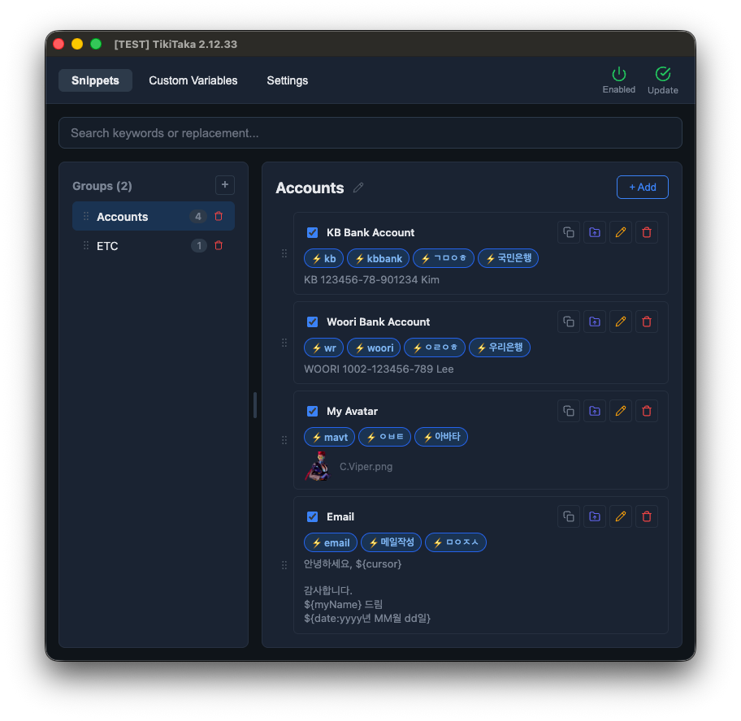
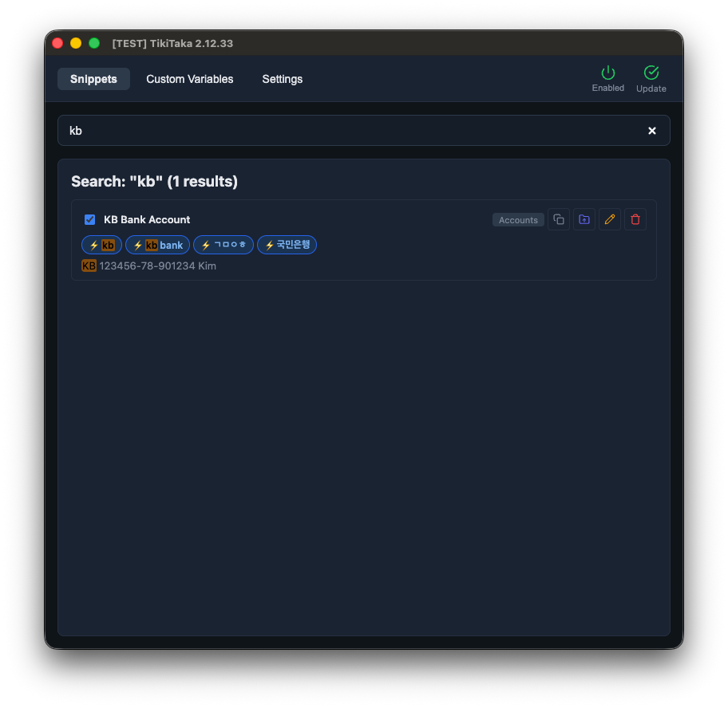
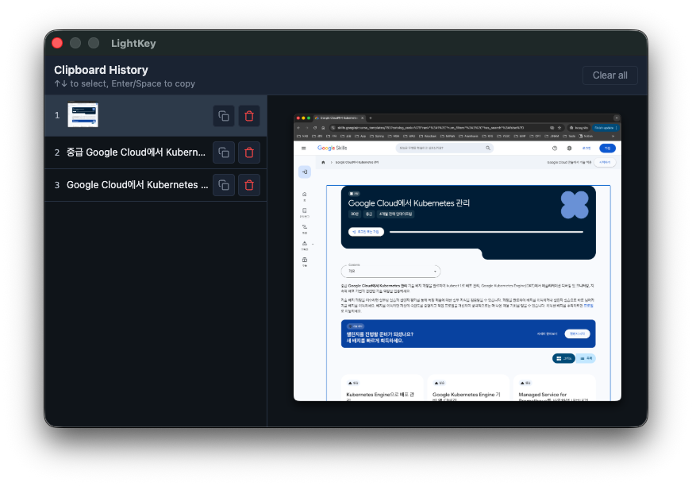
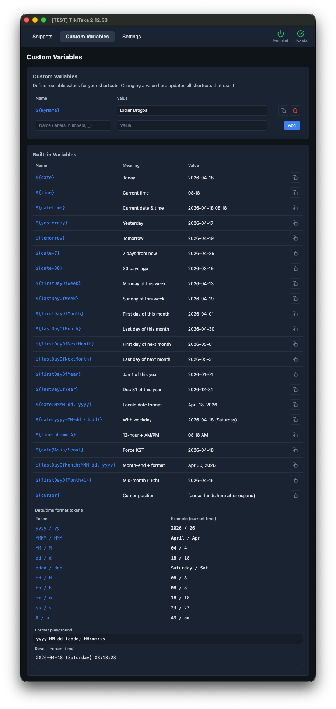
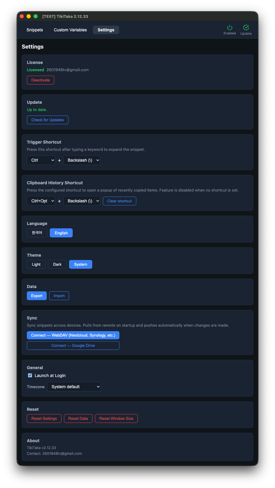
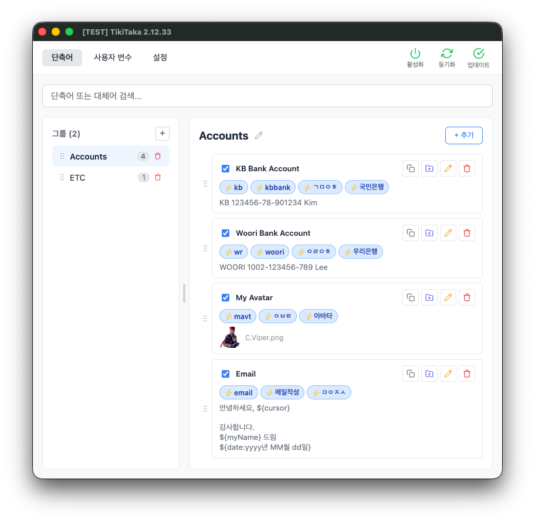
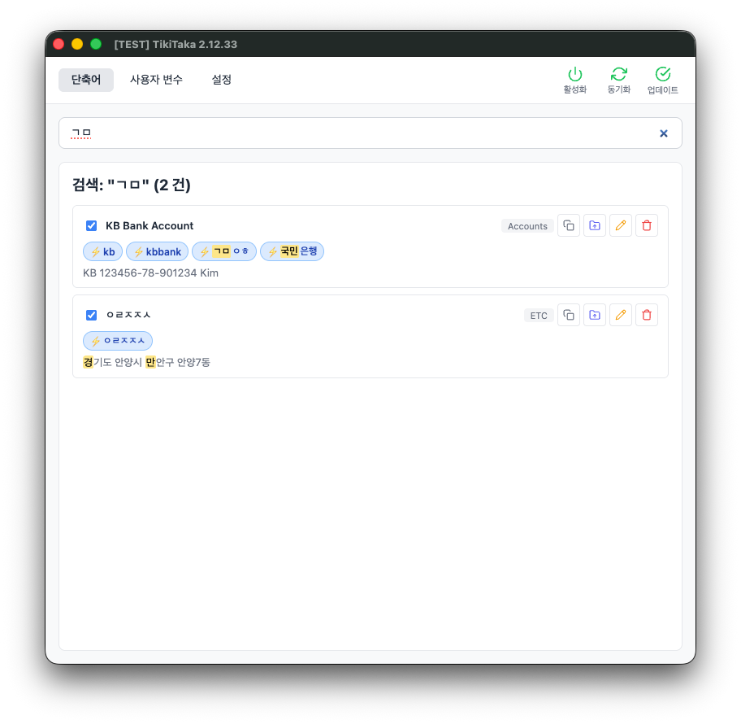
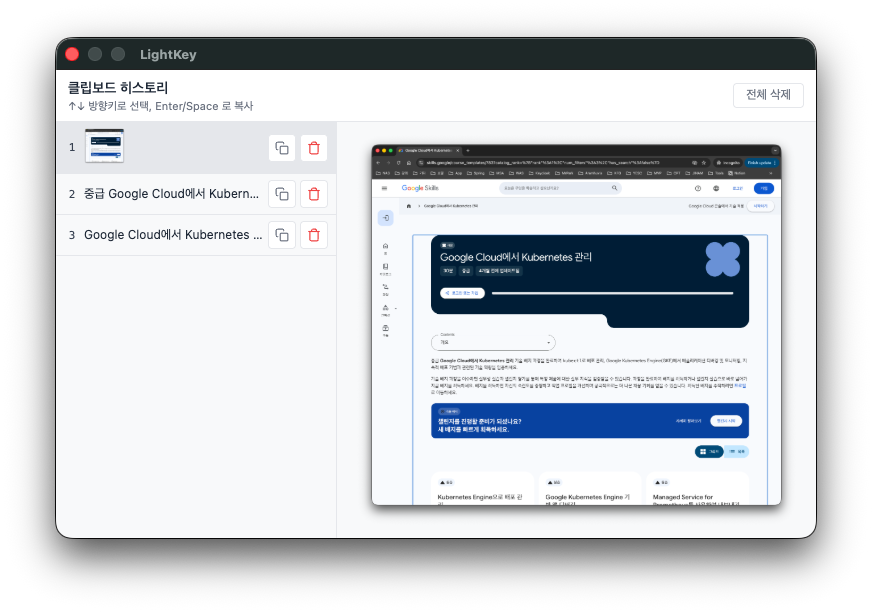
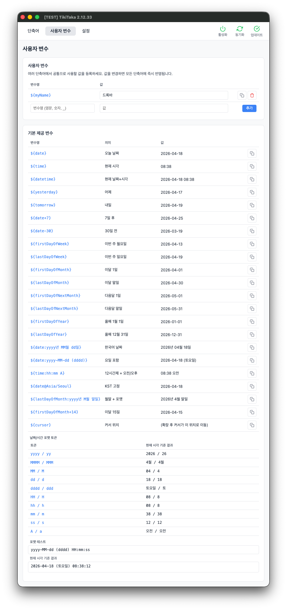
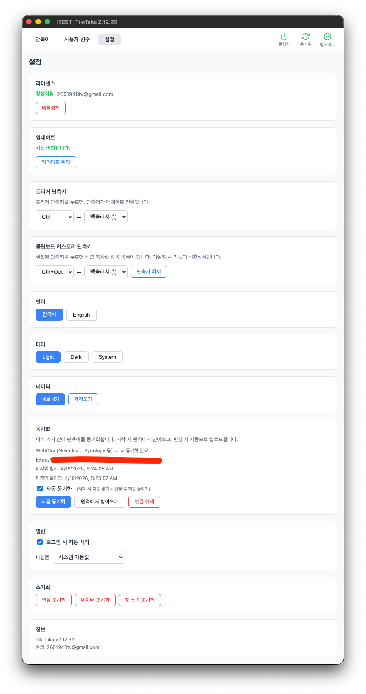

Type less. Get more done.
A Korean-aware text expander, autotext tool, and clipboard history manager for Windows and macOS. Register the phrases you type every day as short shortcuts, and a single keyboard trigger replaces them in place with your full snippet — text, images, or custom variables — even while you're still composing a Korean, Japanese, or Chinese character.
Built for daily friction
Boilerplate, addresses, code snippets, autotext replies, signatures — all reachable from a single keyboard shortcut, in any application, in any language. Text replacement, image expansion, and custom variables work the same way everywhere.
Instant text expansion & replacement
Type a shortcut, leave your cursor at the end of it, and hit your trigger
(default: Ctrl + \). The shortcut is replaced in place with
your full snippet — a sentence, a paragraph, boilerplate, code, an autotext
reply — right inside whatever app you were already typing in.
Works mid-composition in CJK input
The trigger fires even while you're still in the middle of composing a Korean, Japanese, or Chinese character — you don't have to finish the syllable first. Mix CJK and Latin keywords freely inside a single snippet.
Clipboard history & image snippets
Need something you copied twenty minutes ago? It's still there. TikiTaka
keeps a searchable clipboard history of every text and image you've copied,
and image snippets can be triggered the same way as text — type the shortcut,
hit the trigger, the image is pasted. Open the popup
(recommended: Ctrl + Alt + \), pick it, paste it.
Custom variables
Define reusable values like ${email}, ${signature},
or ${date:yyyy-MM-dd} with full date/time format tokens.
Update once and every snippet that uses them updates instantly.
How it works
Three steps. No learning curve.
Define your snippets
Add reusable text — boilerplate, code, addresses, signatures — and
give each one a short keyword like addr or sig.
Type the keyword
While typing in any application, type the keyword you defined. Your work flow stays in whatever app you were already using.
Hit your trigger
Press your configured trigger (default: Ctrl + \).
The keyword is replaced with the full snippet — instantly, in place.
Built for everyone who types
If you find yourself retyping the same things, TikiTaka is for you.
Principles
What makes TikiTaka different.
See it in action
Snippets, clipboard history, custom variables, settings — all in one focused interface.
Snippets
Organize shortcuts into groups and edit them inline.

Search
Find shortcuts by keyword, replacement text, or Korean consonants.

Clipboard history
Recent text and images, recalled with a configurable shortcut.

Custom variables
Reusable values with rich date/time formatting tokens.

Settings
Triggers, themes, automation — all in one place.

Optional cloud sync — your data, your storage
Sync your snippets across devices without giving them up. TikiTaka runs no servers of its own — pick the cloud you already trust, and your data goes straight there. Disabled by default.
Google Drive
Stored in the app-specific hidden folder. TikiTaka only requests the
drive.appdata scope — it cannot see, modify, or delete
any other file in your Drive.
WebDAV
Bring your own server — Nextcloud, Synology, ownCloud, or any standard WebDAV endpoint. Your data goes directly to it, not through any third party.
Conflict-aware: when two devices change the same data, TikiTaka shows you both sides and automatically backs up the previous remote version before any overwrite.
What you get
A straightforward downloadable desktop app — no subscriptions, no accounts, no tracking.
Pricing
Start free. Upgrade once, keep it forever.
Free
- 1 group, up to 10 shortcuts
- Clipboard history
- Custom variables
- Local-first, no telemetry
- Lifetime updates
Pro
- Everything in Free, plus:
- Unlimited groups & shortcuts
- Cloud sync — Google Drive or WebDAV
- One active device at a time — deactivate to move the license to another machine
- 14-day refund, no questions asked
Upgrade from within the app after installing — Settings → License → Buy Pro.
덜 치고, 더 빨리 끝냅니다.
Windows · macOS 용 한글 텍스트 확장기와 클립보드 히스토리 매니저. 자주 쓰는 문장을 짧은 단축어로 등록해 두고, 타이핑 도중에 트리거를 누르면 그 자리에서 바로 펼쳐집니다. 한글 조합 중에도 그대로 동작하며, 텍스트·이미지·사용자 변수 모두 치환됩니다.
매일 반복되는 입력은 단축키 한 번으로
자주 쓰는 답변, 주소, 코드 조각, 서명 — 어떤 앱에서든 단축키 한 번으로 끝냅니다.
짧은 키워드, 긴 문장으로 대체
addr을 치고 트리거 한 번이면 전체 주소가 들어갑니다.
작업 중이던 앱을 벗어날 필요 없이, 어디서든 그 자리에서 바로 치환됩니다.
한글 조합 중에도 바로 동작
한글 받침을 조합하고 있는 도중에 트리거를 눌러도 그대로 치환됩니다. 한글과 영문 키워드를 하나의 단축어에 섞어 쓸 수도 있습니다. 다른 텍스트 확장기에서 안 되던 한글 입력, TikiTaka는 처음부터 됩니다.
클립보드 히스토리
보고서를 쓰다 데이터를 복사해 뒀는데, 급한 메일 때문에 다른 걸 복사했더니
아까 복사한 게 날아갔던 경험 — 이제 다시 찾으러 갈 필요 없습니다.
Ctrl + Alt + \로 최근 복사 목록을 열고 골라서 바로 붙여넣으세요.
사용자 변수
${email}, ${phone} 같은 값을 한 번만 등록해 두면,
여러 단축어에서 공유합니다. 이메일이 바뀌면 변수 하나만 수정 — 그 변수를 쓰는
모든 단축어가 한꺼번에 업데이트됩니다.
사용 방법
세 단계면 끝납니다. 따로 익힐 게 없습니다.
단축어 등록
자주 쓰는 문장이나 주소를 추가하고 짧은 키워드를 붙입니다.
영문(addr), 한글 초성(ㄱㅁ),
한글 완성형(국민) 모두 키워드로 쓸 수 있습니다.
키워드 입력
아무 앱에서나 등록해 둔 키워드를 치고, 커서를 키워드 끝에 둡니다. 중간에 오타를 내도 처음부터 다시 칠 필요 없이, 틀린 부분만 고치면 됩니다.
트리거 한 번
Ctrl + \를 누르면 키워드가 등록된 전체 문장으로 바뀝니다.
한글 받침을 조합하고 있는 도중에 눌러도 그대로 동작합니다.
매일 키보드를 두드리는 모두를 위해
같은 말을 매일 다시 치고 있다면, TikiTaka가 그 시간을 돌려드립니다.
보안을 챙겼습니다
안심하고 쓸 수 있도록.
실제 화면
단축어, 클립보드 히스토리, 사용자 변수, 설정 — 모두 한 화면 안에서 끝납니다.
단축어
그룹으로 분류하고, 행 안에서 바로 수정합니다.

검색
키워드, 대체어, 한글 초성으로 단축어를 빠르게 찾습니다.

클립보드 히스토리
최근 복사한 텍스트와 이미지를 단축키 한 번으로 다시 꺼냅니다.

사용자 변수
날짜·시간 포맷까지 지원하는 재사용 값.

설정
트리거, 테마, 자동 시작까지 한 화면에서.

(선택) 클라우드 동기화
여러 기기에서 단축어를 맞춰 쓰고 싶을 때, TikiTaka 는 자체 서버를 두지 않습니다. 이미 쓰고 있는 Google Drive 나 WebDAV 에 바로 저장하고 바로 불러옵니다. 기본은 꺼져 있고, 필요할 때만 켜서 쓰면 됩니다.
Google Drive
앱 전용 숨김 폴더에만 저장됩니다. TikiTaka 는
drive.appdata 권한만 요청하기 때문에, 본인 Drive 의
다른 파일은 들여다볼 수도, 손댈 수도 없습니다.
WebDAV
본인이 직접 운영하는 서버에 붙입니다 — Nextcloud, Synology NAS, ownCloud, 표준 WebDAV 라면 어디든 됩니다. 데이터가 제3자 서버를 거치지 않고 본인 서버로 바로 갑니다.
충돌도 안전하게: 두 기기에서 같은 데이터를 동시에 바꾸면, 어느 쪽을 살릴지 묻는 다이얼로그가 뜨고, 덮어쓰기 전에 이전 원격 버전을 자동으로 백업해 둡니다.
구매 안내
단순한 다운로드형 데스크톱 앱입니다. 구독도, 계정도, 추적도 없습니다.
가격
무료로 시작하세요. 한 번 구매하면 평생 사용합니다.
Free
- 그룹 1개, 단축어 최대 10개
- 클립보드 히스토리
- 사용자 변수
- 로컬 우선, 수집 / 추적 없음
- 평생 업데이트
Pro
- 무료 플랜의 모든 기능 포함
- 그룹 · 단축어 무제한
- 클라우드 동기화 (Google Drive · WebDAV)
- 활성 기기 1대 — 비활성화하면 다른 기기로 이동 가능
- 14일 환불 보장 (사유 불문)
설치 후 앱 내에서 업그레이드 — 설정 → 라이센스 → Pro 구매.